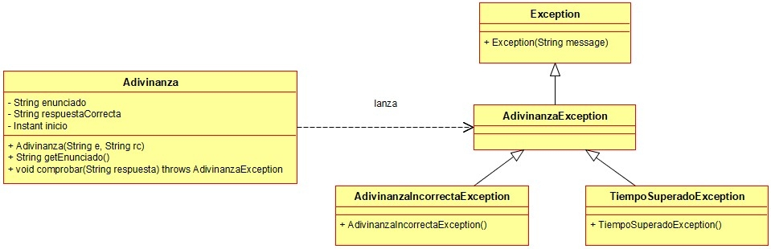

Ejercicio 10 : Programa todas las clases del diagrama de clases Adivinanzas.

-
Adivinanza: Es una clase que representa una adivinanza que tiene que acertar el usuario. Posee un enunciado, un String con su respuesta correcta y también guarda el instante en que se llama al método “getEnunciado”. Este instante, al principio es null.
-
Constructor: Crea una adivinanza con un enunciado y su respuesta correcta
-
getEnunciado: Asigna la propiedad “inicio” con el instante actual y después devuelve el enunciado de la adivinanza
-
comprobar: Comprueba si el String pasado como parámetro coincide con la respuesta correcta de la adivinanza. Se mirará el instante actual, y se comparará con el instante guardado en “inicio”. Si han pasado más de 30 segundos se lanzará una TiempoSuperadoException. En caso contrario, si la respuesta es correcta el método terminará sin hacer nada más, pero si es incorrecta se lanzará una AdivinanzaIncorrectaException.
-
AdivinanzaExcepcion: Clase que representa una excepción con una adivinanza
-
AdivinanzaIncorrectaException: Exception que se lanza si se falla una adivinanza
-
TiempoSuperadoException: Excepción que se lanza si se superan 30 segundos